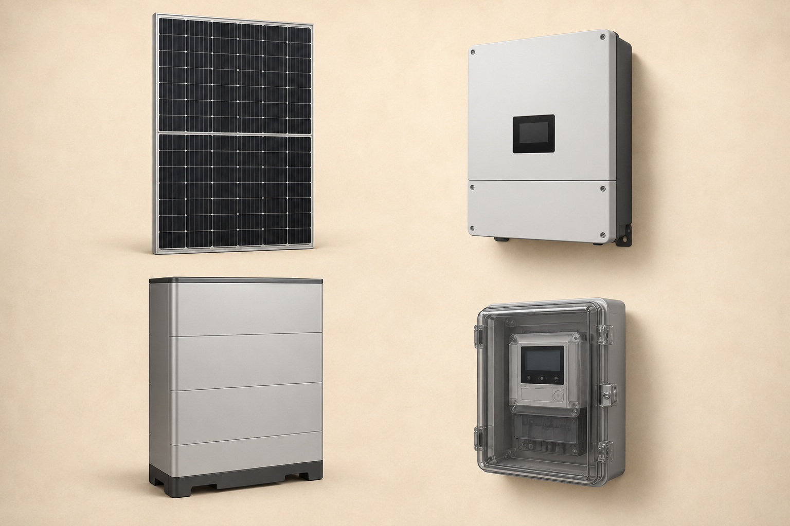
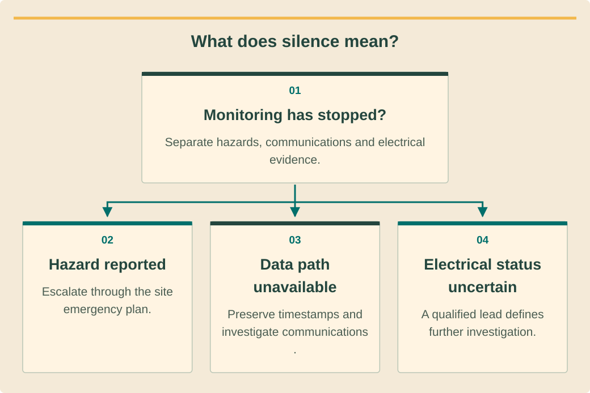

Commissioning, technical service and O&Mהפעלה, שירות טכני ותחזוקהการทดสอบส่งมอบ บริการเทคนิค และบำรุงรักษา · 1 / 9
Triage, isolation planning and evidenceמיון ראשוני, תכנון בידוד וראיותคัดแยก วางแผนแยกพลังงาน และหลักฐาน
Turn a vague service complaint into a safe, evidence-led investigation.להפוך תלונת שירות עמומה לחקירה בטוחה ומבוססת ראיות.เปลี่ยนคำร้องคลุมเครือเป็นการตรวจปลอดภัยตามหลักฐาน.
What you will be able to doמה תדעו לעשותสิ่งที่คุณจะทำได้
- Separate immediate hazards from performance complaints.להפריד סכנה מיידית מתלונת ביצועים.แยกอันตรายเร่งด่วนกับปัญหาสมรรถนะ.
- Preserve evidence before resetting equipment.לשמר ראיות לפני איפוס.เก็บหลักฐานก่อนรีเซ็ต.
- Define investigation and authorization boundaries.להגדיר גבולות חקירה והרשאה.กำหนดขอบเขตตรวจและสิทธิ์.
Start with consequencesלהתחיל מהשלכותเริ่มจากผลกระทบ
Ask what happened, when it began and whether anyone reports smoke, unusual smell, water ingress, damaged cables or exposed parts. Immediate danger changes the response from performance investigation to the site’s emergency process. Keep people away and involve the authorized response team rather than asking an owner to inspect equipment.שואלים מה קרה, מתי והאם דווח עשן, ריח, מים, כבל פגום או חלק חשוף. סכנה מיידית מעבירה לחירום. מרחיקים אנשים ומערבים צוות מורשה במקום לבקש מבעלים לבדוק ציוד.ถามเกิดอะไร เมื่อไร และมีควัน กลิ่นผิดปกติ น้ำเข้า สายเสีย หรือส่วนเปิดหรือไม่ อันตรายทันทีเปลี่ยนจากตรวจสมรรถนะเป็นกระบวนการฉุกเฉิน กันคนออกและใช้ทีมมีสิทธิ์ ไม่ให้เจ้าของตรวจเครื่อง.
If there is no immediate hazard indication, classify the complaint: loss of supply, low generation, missing monitoring data, repeated alarms or unexpected backup behavior. A clear category helps select evidence without assuming that every app warning is an electrical failure or every outage is a failed inverter.ללא סימן סכנה מסווגים: אובדן אספקה, ייצור נמוך, נתוני ניטור חסרים, התראות חוזרות או גיבוי חריג. סיווג מכוון ראיות בלי להניח שכל התראה היא כשל חשמלי או כל הפסקה ממיר פגום.ถ้าไม่มีสัญญาณอันตราย ให้จัดประเภทไฟหาย ผลิตต่ำ ข้อมูลติดตามหาย เตือนซ้ำ หรือสำรองผิดคาด ประเภทชัดช่วยเลือกหลักฐานโดยไม่ถือว่าทุกเตือนแอปคือไฟฟ้าเสียหรือทุกดับคืออินเวอร์เตอร์เสีย.
Preserve the first stateלשמר מצב ראשוןเก็บสภาพแรก
Record timestamps, alarm text, equipment identifiers and the operating mode before a reset or configuration change. Ask whether a storm, network change, maintenance visit or new load preceded the symptom. Export available logs and photographs into the service record with their source and time zone.מתעדים זמן, טקסט התראה, מזהי ציוד ומצב לפני איפוס או שינוי. שואלים אם קדמו סערה, שינוי רשת, תחזוקה או עומס חדש. מייצאים יומנים וצילומים עם מקור ואזור זמן.บันทึกเวลา ข้อความเตือน รหัสอุปกรณ์ และโหมดก่อนรีเซ็ตหรือเปลี่ยนค่า ถามว่ามีพายุ เปลี่ยนเครือข่าย บริการ หรือโหลดใหม่ก่อนอาการหรือไม่ ส่งออกบันทึกและภาพพร้อมแหล่งกับเขตเวลา.
A reset can temporarily clear a symptom while erasing the sequence needed to explain it. Treat reset as a controlled intervention with a purpose and expected result, not a default greeting. Preserve the pre-change condition so recurrence and effectiveness can be assessed later.איפוס עלול להעלים תסמין זמנית ולמחוק סדר אירועים. מתייחסים אליו כהתערבות מבוקרת עם מטרה ותוצאה צפויה, לא כפתיחה אוטומטית. שומרים מצב קודם להערכת חזרה ויעילות.รีเซ็ตอาจล้างอาการชั่วคราวและลำดับที่อธิบายสาเหตุ จัดเป็นการแทรกแซงควบคุมมีวัตถุประสงค์และผลคาด ไม่ทำเป็นอย่างแรกเสมอ เก็บสภาพก่อนเพื่อประเมินการกลับเป็นและประสิทธิผล.
See the ideaרואים את הרעיוןมองเห็นแนวคิด
What does silence mean?מה משמעות השקט?เงียบหมายถึงอะไร?

- Top left: solar module — converts sunlight into DC electricity.למעלה משמאל: פאנל — ממיר אור שמש לחשמל DC.ซ้ายบน: แผงโซลาร์ — เปลี่ยนแสงอาทิตย์เป็นไฟฟ้า DC
- Top right: inverter — controls conversion between electrical interfaces.למעלה מימין: ממיר — מנהל המרה בין ממשקים חשמליים.ขวาบน: อินเวอร์เตอร์ — ควบคุมการแปลงระหว่างส่วนต่อไฟฟ้า
- Bottom left: battery — stores energy for later use.למטה משמאל: סוללה — אוגרת אנרגיה לשימוש מאוחר יותר.ซ้ายล่าง: แบตเตอรี่ — เก็บพลังงานไว้ใช้ภายหลัง
- Bottom right: electricity meter — measures energy at its defined boundary.למטה מימין: מונה — מודד אנרגיה בגבול שהוגדר עבורו.ขวาล่าง: มิเตอร์ไฟฟ้า — วัดพลังงาน ณ ขอบเขตที่กำหนด

Read the diagram as textקריאת התרשים כטקסטอ่านแผนภาพเป็นข้อความ
- Monitoring has stopped?הניטור נעצר?ติดตามหยุดหรือไม่? — Separate hazards, communications and electrical evidence.מפרידים סכנות, תקשורת וראיות חשמל.แยกอันตราย สื่อสาร และหลักฐานไฟฟ้า.
- Hazard reportedדווחה סכנהรายงานอันตราย — Escalate through the site emergency plan.מסלימים לפי תוכנית חירום באתר.ยกระดับตามแผนฉุกเฉินไซต์.
- Data path unavailableנתיב מידע חסרทางข้อมูลขาด — Preserve timestamps and investigate communications.שומרים שעות ובודקים תקשורת.เก็บเวลาและตรวจสื่อสาร.
- Electrical status uncertainמצב חשמלי לא ידועสถานะไฟฟ้าไม่ชัด — A qualified lead defines further investigation.מוביל מוסמך מגדיר המשך בירור.ผู้นำมีคุณสมบัติกำหนดตรวจต่อ.
Plan energy boundariesלתכנן גבולות אנרגיהวางขอบเขตพลังงาน
Identify every possible energy source from the current drawings: public supply, PV, batteries, backup outputs and other site generation if present. Turning off one switch does not establish that all parts are safe. The authorized competent person defines isolation, verification and restoration for the specific task.מזהים מהשרטוט כל מקור: רשת, סולאר, מצבר, יציאות גיבוי וייצור נוסף. כיבוי מתג אחד אינו מוכיח בטיחות הכול. גורם כשיר מורשה מגדיר בידוד, אימות והשבה למשימה.ระบุทุกแหล่งจากแบบปัจจุบัน กริด PV แบตเตอรี่ เอาต์พุตสำรอง และเครื่องผลิตอื่นถ้ามี ปิดสวิตช์เดียวไม่พิสูจน์ว่าทุกส่วนปลอดภัย ผู้มีความสามารถและสิทธิ์กำหนดแยก ยืนยัน และคืนสำหรับงานจริง.
The service plan must also prevent unexpected remote commands or automatic restart from conflicting with work. Coordinate access with the property contact and control-system owner. This course trains planning on supplied records; it does not provide a generic switching sequence for an unknown live system.תוכנית שירות מונעת גם פקודה מרחוק או התנעה אוטומטית בזמן עבודה. מתאמים גישה עם הנכס ואחראי בקרה. הקורס מלמד תכנון ברישומים נתונים, לא רצף מיתוג כללי למערכת חיה לא מוכרת.แผนบริการต้องป้องกันคำสั่งไกลหรือเริ่มอัตโนมัติชนกับงาน ประสานสิทธิ์กับตัวแทนอาคารและเจ้าของควบคุม หลักสูตรฝึกวางแผนจากบันทึกที่ให้ ไม่ให้ลำดับสับสวิตช์ทั่วไปสำหรับระบบมีไฟไม่ทราบแบบ.
Build a testable hypothesisלבנות השערה ניתנת לבדיקהตั้งสมมติฐานตรวจได้
Write the symptom separately from possible causes. For each cause, list evidence that would support or contradict it and the least intrusive authorized next step. Begin with documents and existing logs where useful; avoid unnecessary measurements that add risk without discriminating between hypotheses.כותבים תסמין בנפרד מסיבות. לכל סיבה ראיות תומכות או סותרות והשלב המורשה הפחות פולשני. מתחילים במסמכים ויומנים כשמועיל; נמנעים ממדידה שמוסיפה סיכון בלי להבחין בהשערות.เขียนอาการแยกจากสาเหตุที่เป็นไปได้ แต่ละสาเหตุระบุหลักฐานสนับสนุนหรือหักล้างและขั้นอนุญาตที่รบกวนน้อยที่สุด เริ่มเอกสารกับบันทึกที่มีเมื่อเหมาะ เลี่ยงวัดเพิ่มเสี่ยงแต่แยกสมมติฐานไม่ได้.
End triage with a named owner, priority, next action and communication commitment. Explain what is known and what remains uncertain without inventing a repair time. A useful service record allows another technician to continue the investigation without asking the customer to repeat the entire story.מסיימים מיון באחראי, עדיפות, פעולה ומועד תקשורת. מסבירים ידוע וספק בלי להמציא זמן תיקון. רישום טוב מאפשר לטכנאי אחר להמשיך בלי שהלקוח יספר מחדש הכול.จบคัดแยกด้วยเจ้าของ ลำดับ ขั้นถัดไป และนัดสื่อสาร บอกที่รู้กับที่ไม่แน่โดยไม่แต่งเวลาซ่อม บันทึกดีให้ช่างอื่นทำต่อโดยไม่ให้ลูกค้าเล่าใหม่ทั้งหมด.
Worked exampleדוגמה פתורהตัวอย่างพร้อมวิธีทำ
App silence after a stormשקט ביישומון אחרי סערהแอปเงียบหลังพายุ
Invented resort case: monitoring stopped at 03:10 after a storm; the owner reports normal building supply and no visible damage from a safe location.מקרה ריזורט מדומה: ניטור נעצר ב-03:10 אחרי סערה; הבעלים מדווח אספקה רגילה וללא נזק נראה ממקום בטוח.กรณีรีสอร์ตสมมติ ติดตามหยุด 03:10 หลังพายุ เจ้าของรายงานอาคารมีไฟปกติและไม่เห็นเสียหายจากจุดปลอดภัย.
- Record the hazard screen and timestamp without declaring the PV healthy.מתעדים סקר סכנה ושעה בלי להכריז סולאר תקין.บันทึกคัดอันตรายกับเวลาโดยไม่ประกาศ PV ปกติ.
- Preserve the last data and check existing communication status.שומרים נתון אחרון ובודקים מצב תקשורת קיים.เก็บข้อมูลสุดท้ายและดูสถานะสื่อสารที่มี.
- Assign communication and electrical hypotheses separately.מקצים השערות תקשורת וחשמל בנפרד.แยกสมมติฐานสื่อสารกับไฟฟ้า.
Normal building supply does not prove solar generation, and missing data does not prove zero generation.אספקת בניין רגילה אינה מוכיחה ייצור, ונתון חסר אינו מוכיח ייצור אפס.อาคารมีไฟไม่พิสูจน์ PV ผลิต และข้อมูลหายไม่พิสูจน์ผลิตศูนย์.
Your turnעכשיו מתרגליםถึงเวลาฝึกฝน
Burning smell reportדיווח ריח שרוףรายงานกลิ่นไหม้
Invented exercise: an owner reports a burning smell near a battery cabinet and asks which reset button to press.תרגיל מדומה: בעלים מדווח ריח שרוף ליד מצבר ושואל איזה איפוס ללחוץ.แบบฝึกสมมติ เจ้าของแจ้งกลิ่นไหม้ใกล้ตู้แบตเตอรี่และถามกดรีเซ็ตไหน.
- Write the immediate response category.לכתוב קטגוריית תגובה מיידית.เขียนประเภทตอบทันที.
- List safe information to preserve.לרשום מידע בטוח לשימור.ระบุข้อมูลเก็บได้ปลอดภัย.
Compare with the model answerהשוו לפתרון לדוגמהเปรียบเทียบกับแนวคำตอบ
Escalate through the site emergency process and keep people away; do not instruct the owner to open, reset or approach the cabinet. Record the report time, safe observations and contact details. An authorized response team determines the next physical action.מסלימים בחירום ומרחיקים אנשים; לא מנחים לפתוח, לאפס או להתקרב לארון. מתעדים זמן, תצפיות בטוחות ופרטי קשר. צוות מורשה קובע פעולה פיזית הבאה.ส่งต่อกระบวนการฉุกเฉินและกันคนออก ไม่สั่งเจ้าของเปิด รีเซ็ต หรือเข้าใกล้ตู้ บันทึกเวลารายงาน สิ่งเห็นปลอดภัย และผู้ติดต่อ ทีมมีสิทธิ์กำหนดการกระทำกายภาพถัดไป.
Your exercise notebookמחברת התרגול שלכםสมุดแบบฝึกหัดของคุณ
Write your reasoning and the evidence you would collect. Notes stay in this browser. Export a copy to share with your trainer.כתבו את דרך החשיבה ואת הראיות שתאספו. המחברת נשמרת בדפדפן הזה. הורידו עותק כדי להעביר לבדיקה של אחראי ההדרכה.เขียนเหตุผลและหลักฐานที่จะรวบรวม บันทึกเก็บในเบราว์เซอร์นี้ ส่งออกสำเนาเพื่อส่งให้ผู้ฝึกสอนตรวจ
Before handing overלפני שמעבירים הלאהก่อนส่งมอบงาน
- Hazard screen completed.סקר סכנה הושלם.คัดอันตรายครบ.
- Pre-change evidence retained.ראיות לפני שינוי נשמרו.เก็บหลักฐานก่อนเปลี่ยน.
- Next action and owner explicit.פעולה ואחראי ברורים.ขั้นถัดไปและเจ้าของชัด.
Watch and applyצופים ומיישמיםดูแล้วนำไปใช้
A professional demonstrationהדגמה מקצועיתการสาธิตจากผู้เชี่ยวชาญ
Before pressing playלפני שמפעיליםก่อนกดเล่น
Identify which displayed values need current communications before you can interpret them.זהו אילו ערכים דורשים תקשורת עדכנית לפני פירוש.ระบุค่าที่ต้องมีสื่อสารปัจจุบันก่อนตีความ.
New Victron Remote Management Dashboard released
Victron’s English dashboard introduction, embedded in its current VRM manual. The demonstrated interface may differ from today’s version; monitoring displays are evidence, not electrical acceptance tests.מבוא ללוח ניטור באנגלית של Victron המשולב במדריך VRM הנוכחי. הממשק עשוי להשתנות; תצוגת ניטור היא ראיה ולא בדיקת קבלה חשמלית.Victron แนะนำแดชบอร์ดภาษาอังกฤษที่ฝังในคู่มือ VRM ปัจจุบัน หน้าตาอาจต่างจากรุ่นวันนี้ ข้อมูลติดตามเป็นหลักฐาน ไม่ใช่ทดสอบรับไฟฟ้า.
Connect it to this lessonמחברים לחומר בשיעורเชื่อมกับบทเรียนนี้
A dashboard is a reporting path, not proof that every connected asset is safe.לוח ניטור הוא נתיב דיווח ולא הוכחת בטיחות לכל הציוד.แดชบอร์ดเป็นทางรายงาน ไม่ใช่หลักฐานว่าทุกเครื่องปลอดภัย.
Pause and explainעוצרים ומסביריםหยุดแล้วอธิบาย
What evidence would distinguish a reporting outage from an electrical outage?איזו ראיה תבדיל תקלה בדיווח מהפסקת חשמל?หลักฐานใดแยกข้อมูลขาดจากไฟฟ้าขัดข้อง?
The guidance is available in all three languages. The video keeps the publisher’s original audio; captions and translations depend on the publisher and YouTube. If the embedded player is unavailable, use the source link.הנחיות הצפייה זמינות בשלוש השפות. הסרטון נשאר בשפת המקור; כתוביות ותרגום תלויים במפרסם וב־YouTube. אם הנגן אינו זמין, פתחו את קישור המקור.คำแนะนำมีครบสามภาษา วิดีโอใช้เสียงต้นฉบับ คำบรรยายและการแปลขึ้นกับผู้เผยแพร่และ YouTube หากเครื่องเล่นใช้ไม่ได้ให้เปิดลิงก์ต้นฉบับ
Check your understanding · 80% to passבדיקת הבנה · ציון מעבר 80%ตรวจความเข้าใจ · ผ่านที่ 80%
Sources and review datesמקורות ותאריכי בדיקהแหล่งข้อมูลและวันที่ตรวจสอบ
- PV and energy-storage O&M best practices
Historic 2018 PV/storage O&M guide; not current Thai law or a substitute for equipment manuals.מדריך תחזוקת סולאר ואגירה משנת 2018; אינו חוק תאילנדי עדכני או תחליף למדריכי ציוד.คู่มือบำรุงรักษา PV/กักเก็บปี 2018 ไม่ใช่กฎหมายไทยปัจจุบันหรือคู่มืออุปกรณ์แทน
- Operate and maintain an existing PV system
US lifecycle/O&M guidance; adapt weather and service planning to the actual island property.הנחיות מחזור חיים ותחזוקה מארה״ב; יש להתאים מזג אוויר ותכנון שירות לנכס באי.แนวทางวงจรชีวิตและบำรุงรักษาจากสหรัฐฯ ปรับแผนอากาศและบริการให้ตรงอาคารบนเกาะจริง
- VRM alarms and monitoring
VRM communication/alarms example; notifications are not emergency protective equipment.דוגמת תקשורת והתראות VRM; הודעות אינן ציוד הגנת חירום.ตัวอย่างการสื่อสารและเตือนของ VRM การแจ้งเตือนไม่ใช่อุปกรณ์ป้องกันฉุกเฉิน
- MultiPlus-II 230V configuration
Configuration for MultiPlus-II 230V; approved settings and authorized change control remain project-specific.הגדרת MultiPlus-II 230V; הגדרות מאושרות ובקרת שינויים מורשית תלויות פרויקט.การตั้งค่า MultiPlus-II 230V ค่าที่อนุมัติและสิทธิ์เปลี่ยนแปลงขึ้นกับโครงการ
- MultiPlus-II 230V installation
MultiPlus-II 230V family example only; not proof of Thai approval or universal neutral/RCD arrangements.דוגמה למשפחת MultiPlus-II 230V בלבד; אינה הוכחת אישור תאילנדי או סידור אפס ופחת אחיד.ตัวอย่างเฉพาะ MultiPlus-II 230V ไม่ใช่หลักฐานอนุมัติในไทยหรือรูปแบบนิวทรัล/RCD ที่ใช้ได้ทุกระบบ
Reading and quizzes build knowledge. Field work and practical sign-off require the responsible qualified professional.קריאה וחידונים בונים ידע. עבודת שטח ואישור כשירות מעשית נעשים בהנחיית בעל המקצוע המוסמך והאחראי.การอ่านและแบบทดสอบสร้างความรู้ งานภาคสนามและการรับรองความสามารถปฏิบัติต้องอยู่ภายใต้ผู้เชี่ยวชาญที่มีคุณสมบัติและรับผิดชอบ